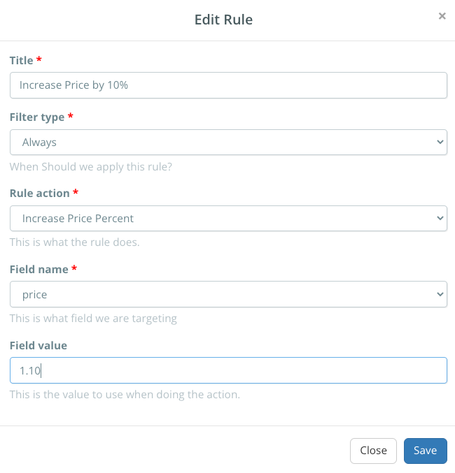

Learn how to create and manage your listing rules to increase or decrease your listing prices in Listing Mirror
Listing Rules can be used to increase or decrease your prices based on criteria you set. These can help increase your profits on other markets by matching your Amazon Multi-Channel Fulfillment (MCF) costs. This feature works alongside our Amazon repricing tool, so certain settings must be enabled. View page
Before creating or running any rules, you may want to download a Price Update spreadsheet from the Bulk Edit Templates page. This will create a snapshot of your current prices, in case you need to revert any changes.
Confirm your integration settings
Previously mentioned, you'll need to ensure your settings are properly configured to work with these rules.
- From the menu bar, click Integrations, followed by Manage Integrations.
- Click your main Amazon integration.
- Enable Update Price and Sync Price.
- Save changes
- Click an integration you'd like to use the rule on.
- On the General tab, enable Price Sync Target.
- Depending on the integration, this may be on the Advanced tab.
These settings may change your current workflow. Moving forward, you'll want to update your prices on Amazon Seller Central. From there, we'll see you changed the price, then update your marketplaces with Price Sync Target enabled accordingly.
If you don't want to change your prices automatically, you can forego the above settings, and run the rule manually. After creating a rule, a Run button will appear alongside the edit and delete settings.
Price rules will run automatically when we notice an Amazon price change with the above settings enabled OR, when a new listing is created.
Creating a price rule to increase or decrease prices
We provide two different methods of changing prices. You can either change them using percentages, or a fixed price.
Percentage
- On the Listing Rules page, click Create under the desired marketplace.
- Give the rule a short title and when you'd like the rule to run.
- Under Rule Action select Increase Price Percent
- Under Field Name, select Price.
- Under Filter Value, input your percentage.
If you want to increase your price by 10%, you'd input 1.10 as your value. If you want to decrease the price by 10%, you'd input -1.10 OR 0.90.
Fixed
- On the Listing Rules page, click Create under the desired marketplace.
- Give the rule a short title and when you'd like the rule to run.
- Under Rule Action select Increase Price Fixed
- Under Field Name, select Price.
- Under Filter Value, input your dollar amount.
If you want to increase your price by $10, you'd input 10 as your value. If you want to decrease the price by $10, you'd input -10.
Including a percent symbol (%) or dollar sign ($) is not needed, and will cause the rule to not run.
Match your non-Amazon listing price to match your Amazon profits
The Match FBA Profit rule allows you to increase or decrease your prices based on your MCF fees, and listing fee of the marketplace. This allows you to profit on your items, even with the increased MCF costs.
| Amazon | eBay |
|---|---|
| Price: $50 | Price: $47 |
| Listing Fee: -$10 | Listing Fee: -$5 |
| FBA Fee: -$5 | MCF Fee: -$7 |
| Profit: $35 | Profit: $35 |
From this example, you can see the eBay price is lower due to the fees associated with the Amazon item being more costly. We'll always match the non-Amazon marketplace price based on the profits of your Amazon sales.
- On the Listing Rules page, click Create under the desired marketplace.
- Give the rule a short title and when you'd like the rule to run.
- Under Rule Action select Match FBA Profit
- Under Field Name, select Price.